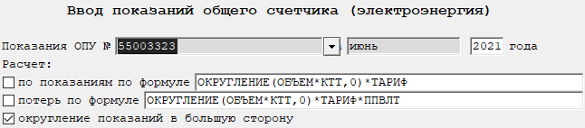

Бланк "Ввод показаний (общие счетчики электроэнергии)"
Данный бланк предназначен для ввода показаний ОПУ ЭЭ и расчета сумм с учетом параметром ТТ (рис. 1).

Рис. 1. Бланк "Ввод показаний (общие счетчики электроэнергии)"Указывается номер ОПУ из справочника и период, за который необходимо внести показание.
Можно указать формулы расчета сумм с графах Расчет по показаниям по формуле и Расчет потерь по формуле и включить соответствующие опции, которые будет применена для каждой тарифной зоны. Можно задавать округление для части формулы. Пример формулы с округлением можно увидеть на рис. 1. Первым параметром указывается то, что надо округлить. Вторым параметром указывается количество знаком после запятой.
После заполнения полей, влияющих на расчет, необходимо пересчитать бланк.
Для этого нажмите кнопку
 на панели инструментов,
клавишу F9, или комбинацию клавиш Ctrl + Enter.
на панели инструментов,
клавишу F9, или комбинацию клавиш Ctrl + Enter.
После пересчета на экране отобразятся таблицы с показаниями и расчетом сумм.